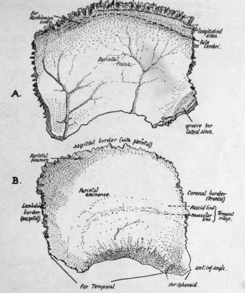
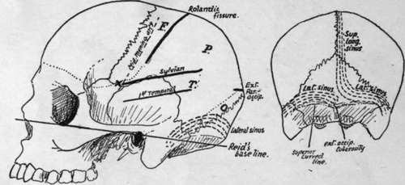

Parietal
Description
This section is from the book "The Anatomy Of The Human Skeleton", by J. Ernest Frazer. Also available from Amazon: The anatomy of the human skeleton.
Parietal
A four-sided bone situated in the back and side of the head and articulating with its fellow in the middle line above (sagittal suture). The bone is a little broader above than below.
The outer surface, convex, is crossed by the temporal ridge about a third or more of its height up : the ridge is curved and usually shows two lines, the lower for the Temporal muscle and the upper for its covering aponeurosis. Above the ridge the bone is covered by Occipito-frontalis ; the lower part is covered by and gives origin to the Temporal muscle. Observe the differences in the surface texture in these two areas.
The 'parietal eminence is the most prominent part of the convexity, presenting a smaller curve than elsewhere : it is situated above the temporal ridge behind the centre of the bone, and marks the site of earliest ossification.
The parietal foramen, which may be absent, unilateral, or very large, is near the upper edge about an inch or less in front of the upper and posterior angle. At birth the position of the foramen is marked sometimes by a transverse slit in the bone (sub-sagittal suture of Pozzi), which enables one part of the bone to ride slightly over the other during parturition, thus aiding the moulding of the head. The slit is obliterated afterwards by extending ossification, and the foramen is only kept open by the persis tence of small vessels that may run through it. Some phylogenetic interest is attached, moreover, to the foramen in that it has been supposed to represent in the human skull the place where, in lower vertebrates, the median eye reaches the surface.
* The writer has only once seen such a bone in the upper part of the suture, at the bottom of a gummatous ulcer in a hospital patient.
The concave inner or cerebral surface has slight depressions corresponding with the convolutions, particularly in its lower part. It otherwise presents :-
(a) Grooves for vessels of the middle meningeal series : usually two main branching grooves, one running up near the front, the other further back.
(b) A partial groove for superior longitudinal sinus, better marked on the right bone as a rule (see Fig. 167). The margins of the groove afford attachment to the falx cerebri.
(c) Depressions for Pacchionian bodies.
(d) A groove on postero-inferior angle, where the lateral sinus reaches the bone from the occipital and at once turns down and passes off it on to the temporal.
(e) A parietal fossa, corresponding with the deepest part of the concavity of the bone.
Margins
(1) Upper or sagittal, much serrated, but usually rather straighter opposite the foramen ; articulates with the opposite parietal.
(2) Anterior or coronal, smaller serrations, articulating in its whole length with frontal, which it overlaps below ; but in the upper part the frontal overlaps the parietal to a less degree. Observe that this suture makes almost a right angle with the sagittal.
Fig. 167.-Right parietal. A., inner surface ; B., outer surface.
(3) Posterior or lambdoid; makes an obtuse angle with the upper border, is much serrated, and articulates in its whole length with occipital.
(4) Lower border ; hinder part, starting at the angle, overlaps and articulates with the petro-mastoid. In front of this the curved margin is bevelled-off on the surface and shows fluted markings for the squama. A little distance from the antero-inferior angle this surface changes abruptly into a smoother surface, slightly concave, overlapped by the sphenoid.
Observe that the lower and front part of the bone is drawn out in a narrow angle : this proclaims the side to which the bone belongs when only seen at a distance.
The parietal covers the parietal lobe, but in addition has lying deep to it portions of all the other lobes that are seen on the surface of the brain. It must be understood that the bone is as much concerned in forming the back as the side of the skull, so that the fissure of Rolando is only about ij inches behind the line of the coronal suture. The position of the fissure and lobes is approximately shown in Fig. 168.
Fig. 168.-Approximate positions of main sulci and sinuses on the surface. On the parietal, F. is frontal lobe, P. parietal lobe, O. occipital lobe, and T. the hinder part of temporal lobe. A', is the position of the " sylvian point".
Development
From two centres appearing in membrane in the eighth week and rapidly fusing : sometimes apparently only a single centre, though this may be only an instance of very early union. The centres are generally upper and lower, and occur in the region of the parietal eminence ; from thence ossification radiates out toward all the margins. The four corners of the bone are not ossified at birth, and the spaces left in this way constitute, with the neighbouring bones, the fontanelles (see p. 266 for account of fontanelles).
Continue to: